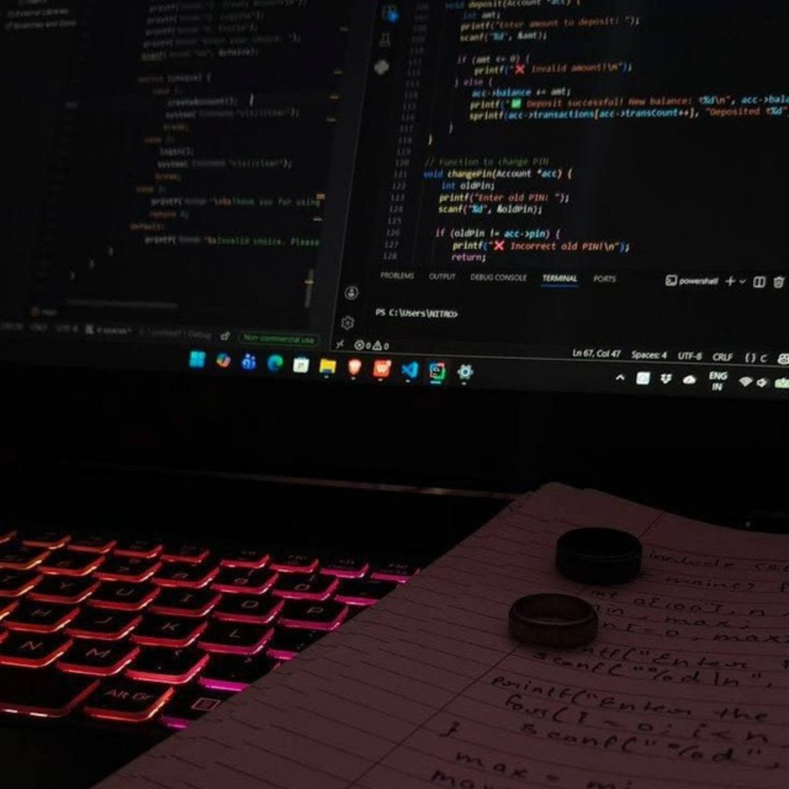

Fix the bug
PHP errors, MySQL issues, broken forms and existing website features.
AVAILABLE FOR SMALL, SCOPED PROJECTS
I’m YAS GOD, a web developer working with PHP, MySQL, React and Python APIs. I help turn website issues and small product ideas into clear, working solutions.

01 / SELECTED WORK
Explore interactive inventory and education demos, plus a visual-only preview of my private object-distance project. Demo records are fictional.
Search stock, record movements and inspect low-stock alerts in a pharmacy inventory prototype.
Python foundations / 3 lessons
Explore a course, mark lessons complete and track progress through a sample learning path.
Preview the interface of a private project. Full contents and internal functionality are withheld for project security.
02 / HOW I CAN HELP
Small, defined tasks are the best starting point. Scope, budget and delivery are agreed after reviewing your requirements.
PHP errors, MySQL issues, broken forms and existing website features.
React components, responsive pages and dashboard interfaces.
Python endpoints, API integrations, input validation and functional checks.
03 / WORKING TOGETHER
Understand the current code and agree on a concrete deliverable.
Make focused changes and test the relevant behavior.
Explain what changed, how to run it and any remaining limitations.
HAVE A SMALL PROJECT IN MIND?